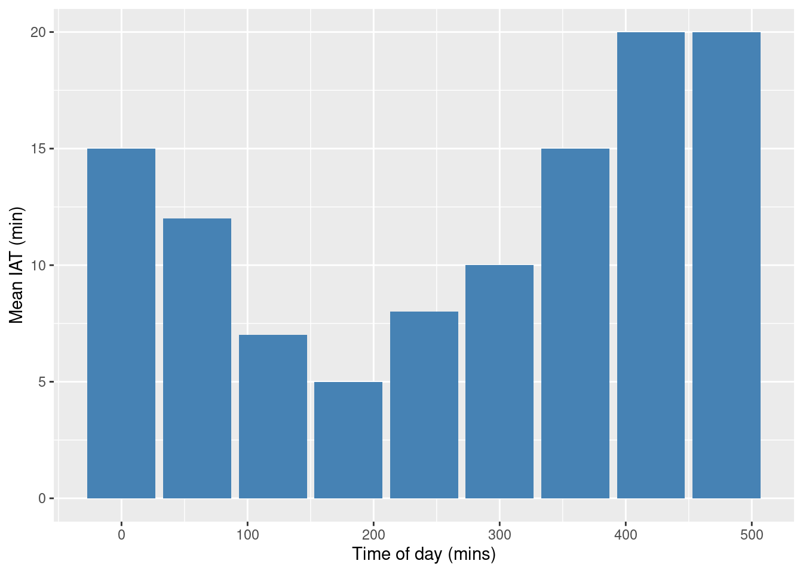
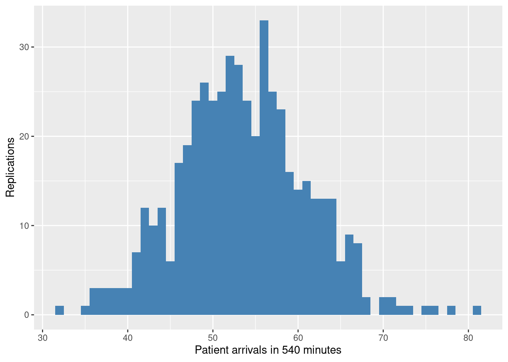

library(simmer)
library(tibble)
library(ggplot2)
suppressMessages(library(RCurl))Time-dependent arrivals
1. Background
The treatment simulation model has a time-dependent arrival profile for patients. To simulated these arrivals correctly in DES we need to use one of several algorithms. Here we make use of the thinning algorithm.
Thinning is a acceptance-rejection sampling method and is used to generate inter-arrival times from a NSPP.
Motivation: In DES we use thinning as an approach to generate time dependent arrival of patients to a health care service.
1.1 An example NSPP
The table below is adapted from Banks et al (2013) and breaks an arrival process down into 60 minutes intervals.
| t(min) | Mean time between arrivals (min) | Arrival Rate \(\lambda(t)\) (arrivals/min) |
|---|---|---|
| 0 | 15 | 1/15 |
| 60 | 12 | 1/12 |
| 120 | 7 | 1/7 |
| 180 | 5 | 1/5 |
| 240 | 8 | 1/8 |
| 300 | 10 | 1/10 |
| 360 | 15 | 1/15 |
| 420 | 20 | 1/20 |
| 480 | 20 | 1/20 |
Interpretation: In the table above the fastest arrival rate is 1/5 customers per minute or 5 minutes between patient arrivals.
1.2 The thinning algorithm
A NSPP has arrival rate \(\lambda(t)\) where \(0 \leq t \leq T\)
Here \(i\) is the arrival number and \(\mathcal{T_i}\) is its arrival time.
Let \(\lambda^* = \max_{0 \leq t \leq T}\lambda(t)\) be the maximum of the arrival rate function and set \(t = 0\) and \(i=1\)
Generate \(e\) from the exponential distribution with rate \(\lambda^*\) and let \(t = t + e\) (this is the time of the next entity will arrive)
Generate \(u\) from the \(U(0,1)\) distribution. If \(u \leq \dfrac{\lambda(t)}{\lambda^*}\) then \(\mathcal{T_i} =t\) and \(i = i + 1\)
Go to Step 2.
2. Imports
3. Read in data
Here we read in the example non-stationary data and compute the arrival rate.
NSPP_PATH = 'https://raw.githubusercontent.com/TomMonks/treat-sim-rsimmer/main/data/nspp_example1.csv'
csv_data <- getURL(NSPP_PATH)
arrivals <- read.csv(text=csv_data)
names(arrivals) <- c("period", "mean_iat")
# create arrival rate
arrivals$arrival_rate = 1.0 / arrivals$mean_iat
arrivals period mean_iat arrival_rate
1 0 15 0.06666667
2 60 12 0.08333333
3 120 7 0.14285714
4 180 5 0.20000000
5 240 8 0.12500000
6 300 10 0.10000000
7 360 15 0.06666667
8 420 20 0.05000000
9 480 20 0.05000000ggplot(data=arrivals, aes(x=period, y=mean_iat)) +
geom_bar(stat="identity", fill="steelblue") +
xlab("Time of day (mins)") +
ylab("Mean IAT (min)")
4. Algorithm implementation
4.1 NSPP sampling function
nspp_thinning <- function(simulation_time, data, debug=FALSE){
# calc time interval: assumes intervals are of equal length
interval <- data$period[2] - data$period[1]
# maximum arrival rate (smallest time between arrivals)
lambda_max <- max(data$arrival_rate)
while(TRUE){
# get time bucket (row of dataframe to use)
t <- floor(simulation_time / interval) %% nrow(data) + 1
lambda_t <- data$arrival_rate[t]
# set to a large number so that at least 1 sample is taken
u <- Inf
rejects <- -1
# running total of time until next arrival
inter_arrival_time <- 0.0
# reject proportionate to lambda_t / lambda_max
ratio <- lambda_t / lambda_max
while(u >= ratio){
rejects <- rejects + 1
# sample using max arrival rate
inter_arrival_time <- inter_arrival_time + rexp(1, lambda_max)
u <- runif(1, 0.0, 1.0)
}
if(debug){
print({paste("Time:", simulation_time,
" Rejections:", rejects,
" t:", t,
" lambda_t:", lambda_t,
" IAT:", inter_arrival_time)})
}
return(inter_arrival_time)
}
}4.2 Example usage
The function can be used in the same way as rexp to generate new patients. To illustrate its use we first create a simple patient pathway trajectory that prints out some event and acts as a delay.
patient <- trajectory("patient pathway") %>%
# just a simple delay
log_(function() {paste("Patient arrival")}, level = 1) %>%
timeout(function() rnorm(1, 10.0, 1.0)) %>%
log_(function() {paste("Exit treatment pathway")}, level = 1)We then run the model with a generator that uses the nspp_thinning sampling function. Note that the function accepts the current simulation time now(env) and the dataframe containing the arrivals arrivals.
Important learning point: we need to detach
runfrom the creation of the simulation environment. This will allownow(env)to run correctly. If we ignore this rule and includerunin the creation pipe the same time will be passed to the thinning function and it will under/over sample arrivals. See https://r-simmer.org/articles/simmer-03-trajectories.html
env <- simmer("TreatSim", log_level=0)
env %>%
add_generator("patient", patient,
function() nspp_thinning(now(env), arrivals, debug=TRUE)) %>%
run(until=540.0)[1] "Time: 0 Rejections: 1 t: 1 lambda_t: 0.0666666666666667 IAT: 6.60448138813904"
[1] "Time: 6.60448138813904 Rejections: 3 t: 1 lambda_t: 0.0666666666666667 IAT: 38.2223867671698"
[1] "Time: 44.8268681553088 Rejections: 0 t: 1 lambda_t: 0.0666666666666667 IAT: 4.11055026089257"
[1] "Time: 48.9374184162014 Rejections: 0 t: 1 lambda_t: 0.0666666666666667 IAT: 1.96410055505112"
[1] "Time: 50.9015189712525 Rejections: 0 t: 1 lambda_t: 0.0666666666666667 IAT: 3.96994441638414"
[1] "Time: 54.8714633876367 Rejections: 0 t: 1 lambda_t: 0.0666666666666667 IAT: 0.0909436540678144"
[1] "Time: 54.9624070417045 Rejections: 0 t: 1 lambda_t: 0.0666666666666667 IAT: 0.294763366219829"
[1] "Time: 55.2571704079243 Rejections: 1 t: 1 lambda_t: 0.0666666666666667 IAT: 2.94235679725938"
[1] "Time: 58.1995272051837 Rejections: 1 t: 1 lambda_t: 0.0666666666666667 IAT: 3.31893699516812"
[1] "Time: 61.5184642003518 Rejections: 0 t: 2 lambda_t: 0.0833333333333333 IAT: 0.125600891187787"
[1] "Time: 61.6440650915396 Rejections: 0 t: 2 lambda_t: 0.0833333333333333 IAT: 1.94474088028073"
[1] "Time: 63.5888059718203 Rejections: 2 t: 2 lambda_t: 0.0833333333333333 IAT: 11.5495376145835"
[1] "Time: 75.1383435864039 Rejections: 0 t: 2 lambda_t: 0.0833333333333333 IAT: 0.313380176667124"
[1] "Time: 75.451723763071 Rejections: 5 t: 2 lambda_t: 0.0833333333333333 IAT: 10.0872231288384"
[1] "Time: 85.5389468919094 Rejections: 0 t: 2 lambda_t: 0.0833333333333333 IAT: 2.53530872520059"
[1] "Time: 88.07425561711 Rejections: 5 t: 2 lambda_t: 0.0833333333333333 IAT: 11.0190523967693"
[1] "Time: 99.0933080138793 Rejections: 3 t: 2 lambda_t: 0.0833333333333333 IAT: 12.8680750852042"
[1] "Time: 111.961383099083 Rejections: 0 t: 2 lambda_t: 0.0833333333333333 IAT: 0.273815204855055"
[1] "Time: 112.235198303939 Rejections: 1 t: 2 lambda_t: 0.0833333333333333 IAT: 7.04419449649236"
[1] "Time: 119.279392800431 Rejections: 1 t: 2 lambda_t: 0.0833333333333333 IAT: 6.11522971255491"
[1] "Time: 125.394622512986 Rejections: 2 t: 3 lambda_t: 0.142857142857143 IAT: 18.8611651017311"
[1] "Time: 144.255787614717 Rejections: 0 t: 3 lambda_t: 0.142857142857143 IAT: 4.16606501253862"
[1] "Time: 148.421852627255 Rejections: 0 t: 3 lambda_t: 0.142857142857143 IAT: 14.9911227729349"
[1] "Time: 163.41297540019 Rejections: 0 t: 3 lambda_t: 0.142857142857143 IAT: 0.877300298307091"
[1] "Time: 164.290275698497 Rejections: 0 t: 3 lambda_t: 0.142857142857143 IAT: 0.771620173472911"
[1] "Time: 165.06189587197 Rejections: 0 t: 3 lambda_t: 0.142857142857143 IAT: 8.03274416148261"
[1] "Time: 173.094640033453 Rejections: 0 t: 3 lambda_t: 0.142857142857143 IAT: 3.93080355112857"
[1] "Time: 177.025443584582 Rejections: 0 t: 3 lambda_t: 0.142857142857143 IAT: 7.97838258515012"
[1] "Time: 185.003826169732 Rejections: 0 t: 4 lambda_t: 0.2 IAT: 2.33859735172552"
[1] "Time: 187.342423521457 Rejections: 0 t: 4 lambda_t: 0.2 IAT: 5.01475271747863"
[1] "Time: 192.357176238936 Rejections: 0 t: 4 lambda_t: 0.2 IAT: 2.38979005953297"
[1] "Time: 194.746966298469 Rejections: 0 t: 4 lambda_t: 0.2 IAT: 1.97432373650372"
[1] "Time: 196.721290034972 Rejections: 0 t: 4 lambda_t: 0.2 IAT: 6.32978100199179"
[1] "Time: 203.051071036964 Rejections: 0 t: 4 lambda_t: 0.2 IAT: 9.55589522565615"
[1] "Time: 212.60696626262 Rejections: 0 t: 4 lambda_t: 0.2 IAT: 11.7599831235813"
[1] "Time: 224.366949386202 Rejections: 0 t: 4 lambda_t: 0.2 IAT: 4.42439305136488"
[1] "Time: 228.791342437567 Rejections: 0 t: 4 lambda_t: 0.2 IAT: 5.80665699185288"
[1] "Time: 234.59799942942 Rejections: 0 t: 4 lambda_t: 0.2 IAT: 1.46109151421115"
[1] "Time: 236.059090943631 Rejections: 0 t: 4 lambda_t: 0.2 IAT: 4.11777440895921"
[1] "Time: 240.17686535259 Rejections: 2 t: 5 lambda_t: 0.125 IAT: 30.4208898415293"
[1] "Time: 270.597755194119 Rejections: 0 t: 5 lambda_t: 0.125 IAT: 0.718266416806728"
[1] "Time: 271.316021610926 Rejections: 0 t: 5 lambda_t: 0.125 IAT: 8.47060439134848"
[1] "Time: 279.786626002274 Rejections: 0 t: 5 lambda_t: 0.125 IAT: 1.80463053518906"
[1] "Time: 281.591256537463 Rejections: 0 t: 5 lambda_t: 0.125 IAT: 2.73546760900867"
[1] "Time: 284.326724146472 Rejections: 2 t: 5 lambda_t: 0.125 IAT: 20.6461490123808"
[1] "Time: 304.972873158853 Rejections: 0 t: 6 lambda_t: 0.1 IAT: 1.91213063514486"
[1] "Time: 306.885003793998 Rejections: 2 t: 6 lambda_t: 0.1 IAT: 12.6577376756341"
[1] "Time: 319.542741469632 Rejections: 0 t: 6 lambda_t: 0.1 IAT: 4.29773922057307"
[1] "Time: 323.840480690205 Rejections: 2 t: 6 lambda_t: 0.1 IAT: 23.4489883913778"
[1] "Time: 347.289469081583 Rejections: 0 t: 6 lambda_t: 0.1 IAT: 0.377947333957309"
[1] "Time: 347.66741641554 Rejections: 0 t: 6 lambda_t: 0.1 IAT: 0.309758780058473"
[1] "Time: 347.977175195599 Rejections: 1 t: 6 lambda_t: 0.1 IAT: 18.1603777353632"
[1] "Time: 366.137552930962 Rejections: 8 t: 7 lambda_t: 0.0666666666666667 IAT: 29.9604206477663"
[1] "Time: 396.097973578728 Rejections: 0 t: 7 lambda_t: 0.0666666666666667 IAT: 11.492602591704"
[1] "Time: 407.590576170432 Rejections: 4 t: 7 lambda_t: 0.0666666666666667 IAT: 16.8726465525595"
[1] "Time: 424.463222722992 Rejections: 0 t: 8 lambda_t: 0.05 IAT: 0.252609157435063"
[1] "Time: 424.715831880427 Rejections: 7 t: 8 lambda_t: 0.05 IAT: 42.4018466228467"
[1] "Time: 467.117678503273 Rejections: 0 t: 8 lambda_t: 0.05 IAT: 1.55156628927216"
[1] "Time: 468.669244792546 Rejections: 9 t: 8 lambda_t: 0.05 IAT: 44.4204908224895"
[1] "Time: 513.089735615035 Rejections: 5 t: 9 lambda_t: 0.05 IAT: 40.0685665684267"simmer environment: TreatSim | now: 540 | next: 553.158302183462
{ Monitor: in memory }
{ Source: patient | monitored: 1 | n_generated: 60 }5. Validation
The total number of arrivals in 540 minutes
Here we will repeat the same 10,000 times and then explore the distribution of the number of arrivals. If all has gone to plan this should be a Poisson distribution with mean ~53.
# expected arrivals from data.
round(sum(arrivals$arrival_rate * 60), 2)[1] 53.07We can use the simmer function get_n_generated to return the number of patients generated.
arrivals_by_replication <- function(envs){
results <- vector()
for(env in envs){
results <- c(results, get_n_generated(env, "patient"))
}
return(data.frame(results))
}single_run <- function(env, rep_number, run_length, debug_arrivals=FALSE){
env %>%
add_generator("patient", patient,
function() nspp_thinning(now(env), arrivals, debug=debug_arrivals)) %>%
run(until=540.0)
return(env)
}RUN_LENGTH <- 540.0
N_REPS <- 500
SEED <- 42
set.seed(SEED)
patient <- trajectory("patient pathway") %>%
# just a simple delay
log_(function() {paste("Exit treatment pathway")}, level = 1)
# note unlike in simmer documentation we use a traditional for loop
# instead of lapply. This allows us to separeate env creation
# from run and preserve the environment interaction between NSPP
# and current sim time.
envs = vector()
for(rep in 1:N_REPS){
env <- simmer("TreatSim", log_level=0)
single_run(env, i, RUN_LENGTH)
envs <- c(envs, env)
}
# # get the number of arrivals generated
results <- arrivals_by_replication(envs)
# show mean number of arrivals. Should be close to 53
mean(results$results)[1] 53.552ggplot(results, aes(x=results)) +
geom_histogram(binwidth=1, fill="steelblue") +
xlab("Patient arrivals in 540 minutes") +
ylab("Replications")